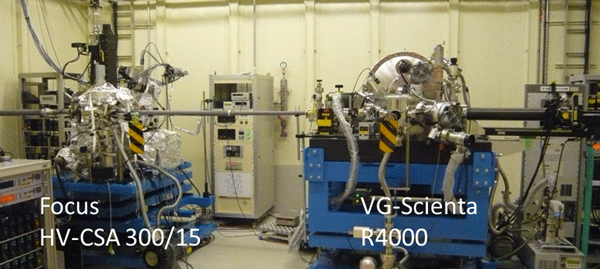
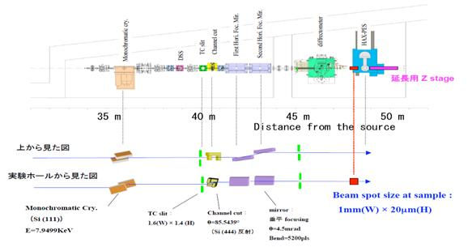

硬Ｘ線光電子分光（ＨＡＸＰＥＳ）装置としてSCIENTA OMICRON社製Ｒ４０００光電子エネルギー分析器をＢＬ４６ＸＵ実験ハッチ下流側に設置している。

Ｘ線はダブルクリスタルモノクロとチャンネルカットモノクロを通して単色化され、二枚の横集光鏡及び一枚の縦集光鏡によって集光後、装置に導入される。 試料位置でのビームサイズは縦２０μｍ、横１５０μｍとなる。 使用可能なＸ線のエネルギーは６、８、１０keVであるが、現在は８keVでの運用のみである。
測定対象となる光電子の運動エネルギーは０～８keVであり、重元素の深い内殻軌道からの光電子から価電子領域の光電子まで幅広く検出することが可能である。 試料ホルダーはＸＹＺΘ軸駆動が可能であり、Θ回転に対応して光電子脱出角度は変化し、表面から固体内部までの深さ方向の化学状態分析を可能としている。 また装置は中和銃も備えており、絶縁物（帯電の程度に拠る）の測定も可能である。

SCIENTA OMICRON社製 R-4000
実験は測定準備として、測定室への試料の導入と真空引きに約２時間要する。
※測定に要する時間は、試料の組成と測定領域に大きく依存するため、事前にご相談下さい。
試料導入マニュアル
測定手順マニュアル
組成定量手順
BL46XU HAXPES 標準試料データベース
SPring-8実験データ転送システムBENTEN
（注）e-mailアドレスは＠マーク以下を省略していますので、
アカウントの後に@spring8.or.jpを付けてください。
安野 聡
（財）高輝度光科学研究センター(JASRI)
〒679-5198 兵庫県佐用郡佐用町光都1丁目1-1
Phone : 0791-58-0832
PHS: 3493
FAX : 0791-58-0830
e-mail :yasuno
アカウントの後に@spring8.or.jpを付けてください。
安野 聡
（財）高輝度光科学研究センター(JASRI)
〒679-5198 兵庫県佐用郡佐用町光都1丁目1-1
Phone : 0791-58-0832
PHS: 3493
FAX : 0791-58-0830
e-mail :yasuno